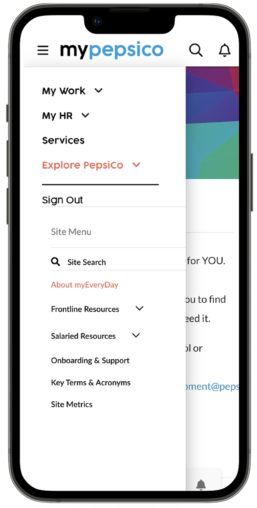
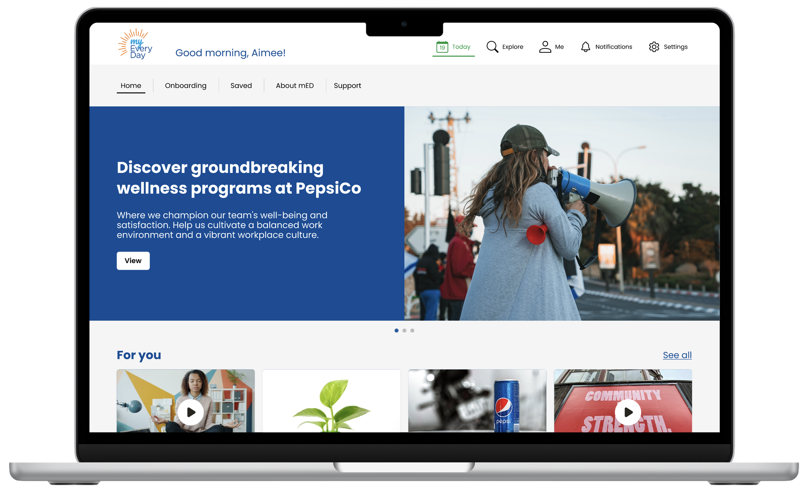
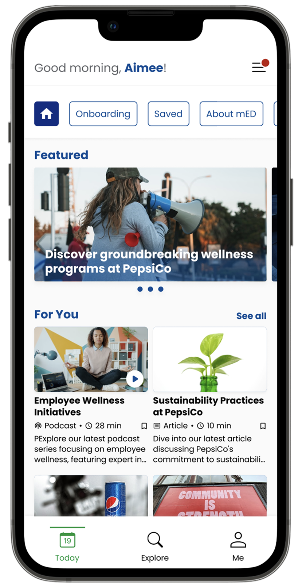

myEveryDayRedesigned
The myEveryDay platform served 25,000+ frontline employees, but it was buried, cluttered, and slow. A full UX redesign untangled the experience and put critical content within reach.
A tool that employees couldn't afford to struggle with
myEveryDay is PepsiCo's internal information hub for frontline employees (delivery drivers, sales reps, and marketing teams) who rely on it mid-route, mid-task, and mid-conversation. Revenue was at high risk when employees continued to struggle with this essential tool.
The tool had grown organically within myPepsiCo, accumulating years of content without a clear structure. This led to a buried, confusing product that frustrated users and overwhelmed the help desk.

Before

Before — Navigation to myEveryDay
We interviewed 64 frontline employees across three user types, which was one of the largest qualitative research efforts I've run.
Building from what 64 people told us
We interviewed 64 frontline employees, stakeholders, and new hires across three user types. We reviewed in-app analytics to map where users got stuck and what content went undiscovered. Using FigJam, participants sketched their ideal screens, which gave us confidence in our design decisions based on user intent rather than assumptions.
Content discovery was the #1 pain point. Participants described hunting through menus for several minutes only to give up and call a manager or the help desk. Analytics confirmed high-traffic content had deep, convoluted navigation paths, and low-traffic pages were simply unknown, not irrelevant.
New hires needed a separate onboarding path. Day-one employees faced the same default experience as veterans, with no guided entry point. When shown a personalized view, participants immediately understood what was relevant to their job.
Three tabs. One clear mental model.
The old navigation mirrored the organization chart. The new IA mirrors how frontline employees actually think about their day. A three-tab model (Today, Explore, Me) gives every user a personalized starting point with clear paths.
- Personalized welcome + greeting
- Featured content carousel
- Role-curated "For You" feed
- New hire onboarding queue
- Scoped search (mED content only)
- Filters: type and category
- Content categories by workflow
- Trending and popular content relevant to the role
- Saved articles and videos
- Training progress tracker
- Recent activity history
- Account and preferences
What changed, and why it mattered
- Buried inside the myPepsiCo menu with no independent entry point
- Search returned the entire corporate intranet, not mED content
- Unstructured content with no categories, no hierarchy
- 9 clicks to reach frequently needed information
- New hires struggled to find the tool, and some didn't know it existed
- Standalone app with its own identity, navigation, and search
- Scoped search with filters by type and category
- Clear IA: grouped by workflow
- 2 clicks to reach the same frequently needed information
- Onboarding section is easy to find for new employees
Explore the design file, including flows, components, and design system
Go to Figma →
Final — Home (Desktop)

Final — Home (Mobile)
Testing across real frontline roles
We tested the interactive prototype with drivers, sales reps, and office staff and measured task completion speed, navigation clarity, and confidence. Multiple rounds of refinement followed, with particular focus on the search/filter flow and onboarding experience for new hires.
What we validated
- The Today tab immediately oriented users.
- Scoped search eliminated the corporate intranet noise.
- Role-based content made the experience feel personal without requiring any setup.
What we refined
- Search filter labels needed simplification for non-tech-savvy users.
- The onboarding section needed a stronger visual anchor in navigation.
- Content detail pages needed consistent duration and type indicators.
Results that moved the business
- 78% reduction in clicks, from 9 taps to 2 per task.
- Roughly 40 minutes is saved per driver per day, which is enough for one additional delivery per route. That is a direct operational and revenue impact that leadership immediately recognized.
- 18% faster delivery times, so the average delivery dropped from 32 to 26 minutes.
- Help desk call volume dropped significantly as self-service improved.
- Component library and style guide ensure future content additions stay consistent without requiring a designer.
The redesigned myEveryDay now serves as the standard experience across all 25,000+ frontline users.
"It has been so great having Joyce as the Lead Designer for one of my technology enhancement projects that reaches 25K+ frontline sales employees daily. She is an incredible listener and collaborator and will take ideas anyone has to the next level!"